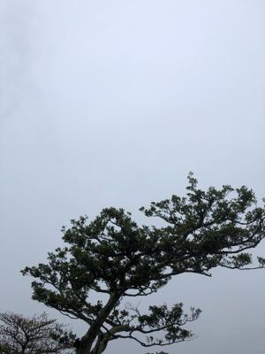
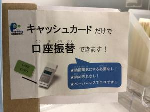
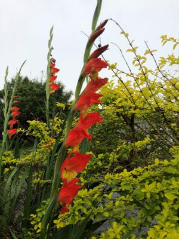

うるがいの話 ある日
最新: 国民保険【うるがいの話 ある日】とは 一日だけのプログです
『うるがいの話』の最新一日だけのプログで、通信料が少なく経済的だ。カニの画像をクリックすると全ての日付が載る『うるがいの話』サイトを表示します
|
|
【うるがいの話】 うるがい(ｳﾙｶﾞｲ urugai)とは、『もずくがに』の名前でとても大きくなります。 |
|---|---|
|
|
【カミマヤーの話】 猫のことを方言でマヤーといいます。カミマヤー（kamimayaa）とは、神の猫のことです。 |
|
【たながぁの音楽】 たながぁ（ﾀﾅｶﾞｰtanagaa）とは手長えびのことで、何種類かあり大きいのは車 エビぐらいになります。 |

|
【ぶながぁの話】 ぶながー(bunagaa)とは、赤い髪の毛、赤い身体、そして身長は１ｍ２０ｃｍ ぐらい、川の蟹を食べているの目撃された。場所は沖縄県国頭郡大宜味村のと ある村僕の隣近所に住んでいる爺さんから、聞いた話です。 |
|
|
【ギーマの話】 ギーマ(giima)とは、山原の里山に咲くスズランに似た、 花を付けます。実は食べられます、 気が付くと口の周りが紫になっています。 |
2022年04月04日 (月）国民保険
21:22
 
動物係１班のヨメが、ミーヤンの猫の毛が目に入ったのか、目が痛い（私の猫
毛で痛くなったのと同じだ）、病院へ行きたいから国民保険への加入手続きを
早くしたい。と言われ、国民保険の加入手続きをする。２年前にも挑戦したの
で余裕しゃくしゃく、窓口のイントロでも・・・、ところがである「年収はゼ
ロですが確定申告しましたか？、情報がありません（因みに年金を貰っている
ヨメは確定申告してあるのでデータが連携されている）」と言われる、えっ！
収入ゼロはしなくてもいいのでは、特にサイトにも書いてなかったと食いつい
た。那覇市の所得証明書をとれば良かったのですか？、「いいえ、だめです、
申告しないとデータがないので今回は仮申請で、対応します。確定申告は３月
で締めているのですが、６月になると申告できますから申告してて下さい。そ
うしないと今回のようなケースになるのでやって下さい」と言われた。お、で
は仮に６月の申告が遅れた場合、何時までが期限ですかと質問する。「・・・
」可哀想なので突っ込みは止めた。それで納める額は年間で２万８千円になり
ますと説明された。ん、予定どうり事前に那覇市の簡易計算の値と一緒だ。「
支払いは新規加入なので６月からです、月当たりだと２千８百円になります」
、ん２万８千円ではない、なんと月の支払い額が２万８千円と勘違いしていた
嬉しくなる。えーと口座引き落とししたいのですが手続きはどうすればいいで
すかと尋ねると「ＡＴＭのカード持っていますか」、ハイ、あっさりと手続き
を済ませる。ちなみに「カードも持っていなかった場合は、再度この窓口にく
るか、銀行で手続きをすることになります」と言われた。前もって準備して良
かった。ついでに、５０００円がもらえるマイナポイントの手続きをしてくれ
る窓口があったのでマイナンバーカードを持って手続きをする。担当者の指示
でカードリーダにカードを置き「暗唱番号」を入力してくださいと言われたの
で、この前ＰＣ１号仕掛けたアカウントパスワードに設定した４桁を入力した
パスワードが違います、と警告される。「後２回間違えるとロックされます」
と担当者が横で伝える。おー、これかもと再チャレンジする、無事パス。楽天
エディが使えるカードでチャージすることにした。ポイントが貰えるまでには
いろいろ手順があるが、疲れたので書くのを止める、ヨメは直ぐに眼科へ行く
。当たり前だが診察料は３割負担だった。

２１時１５分 ビットコインの総資産 ￥１６、４１６↓